About me
Thomas Rasmussen

I work as a software developer/consultant at Gennemtænkt IT
Thomas Rasmussen
16. November, 2023
Thomas Rasmussen
I work as a software developer/consultant at Gennemtænkt IT

Development was started by Torvalds in April 2005 when the proprietary source-control management (SCM) system used for Linux kernel development since 2002, BitKeeper, revoked its free license for Linux development - Wikipedia: Git
The decision made in 2002 to use BitKeeper for Linux kernel development was a controversial one. Some, including GNU Project founder Richard Stallman, expressed concern about proprietary tools being used on a flagship free project. While project leader Linus Torvalds and other core developers adopted BitKeeper, several key developers (including Linux veteran Alan Cox) refused to do so, citing the BitMover license, and voicing concern that the project was ceding some control to a proprietary developer - Wikipedia: BitKeeper
In software engineering, a version control system (also known as revision control) is a class of systems responsible for managing changes to computer programs – Wikipedia: VCS
Website: git-scm.com
Docs: Website: git-scm.com/docs
At first Git can look like a monster - it has many commands and many ways of doing things
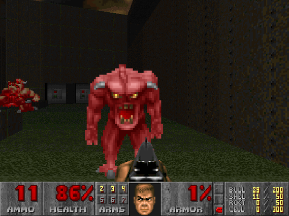
Try to keep it simple - add, commit, push …
Use it for maintaining the Linux kernel with thousands of developers - or use it for your own private one developer project
Install Git using your OS package manager
Ubuntu
$ sudo apt-get install git-allOr dowload and follow instructions from Git-scm downloads
$ git config --global user.name "Thomas Rasmussen
$ git config --global user.email "example@example.com"
$ git config --global --list
user.name=Thomas Rasmussen
user.email=example@example.comThe config file
$ cat ~/.gitconfig
[user]
name = Thomas Rasmussen
email = example@example.com…
[init]
defaultBranch = "master" # or "main"…
[includeIf "gitdir:~/workspace/gennemtaenkt/"]
path = ~/.git/gtit.inc$ mkdir my-project
$ cd my-project
$ git init
Initialized empty Git repository in /home/thomas/my-project/.git/Git bare also creates a repository, but it does not have the working directory
Use this for the “main” repository that developers push and pull to/from
$ mkdir my-project.git
$ cd my-project.git
$ git --bare init├── branches
├── config
├── description
├── HEAD
├── hooks
│ ├── applypatch-msg.sample
│ ├── commit-msg.sample
│ ├── post-update.sample
│ ├── pre-applypatch.sample
│ ├── pre-commit.sample
│ ├── prepare-commit-msg.sample
│ ├── pre-rebase.sample
│ └── update.sample
├── info
│ └── exclude
├── objects
│ ├── 09
│ │ └── 2ca1d854a2aa8fdc8a9c19ee8225eb3d6bc2ca
│ ├── 0f
│ │ ├── 5aded2c67fa82f99527d6dd9f236aacaa8b0c9
│ │ └── 74d568bd457904b79eb62052f77525ad6fc3a2
│ ├── 17
│ │ └── fcc1f450cfb471f9ff0c6e936a042fae9f6ffd
│ ├── 4d
│ │ └── ...
│ ├── info
│ └── pack
└── refs
├── heads
│ └── master
└── tags |09| ... |
git show 092ca1d854a2aa8fdc8a9c19ee8225eb3d6bc2caNOTE: Don’t edit the .git folder!
$ vi README.md
$ git status
On branch master
No commits yet
Changes to be committed:
(use "git rm --cached <file>..." to unstage)
new file: README.md
$ git add README
$ git commit -m "Initial commit"
$ git commit -vEditor - use default
$ export EDITOR=vi
$ echo $EDITOR
viOr specify in ~/.gitconfig
...
[core]
pager = more
editor = vim
...The revert command is one of gits ways of undoing commits
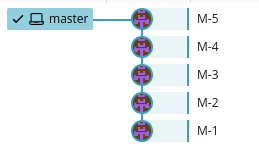
$ git revert HEAD
[master 31adeb6] Revert "M-5"
1 file changed, 5 deletions(-)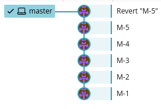
Reset is another way of undoing and the most complex and versatile of the two
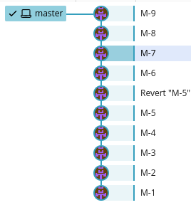
$ git reset --hard 161655d9ae78360970d2fb61f8f85e0267695b11
HEAD is now at 161655d M-7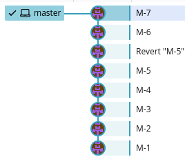
Branching is the duplication of an object under version control (such as a source code file or a directory tree).
Each object can thereafter be modified separately and in parallel so that the objects become different.
In this context the objects are called branches.
Source: Wikipedia
$ git checkout -b MyFirstBranch
Switched to a new branch 'MyFirstBranch
# Add and commit changes B-1 to B-4 ....
$ git checkout master
# Or use switch
$ git switch master
$ git branch
MyFirstBranch
* master
# Merge MyFirstBranch INTO master
$ git merge MyFirstBranch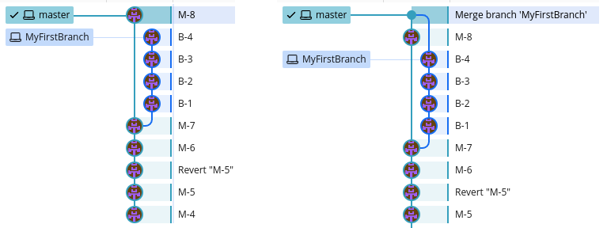
Sometimes Git can’t merge if files have been edited by multiple people
$ git merge MyBranch
>>> Auto-merging README.md
>>> CONFLICT (content): Merge conflict in README.md
>>> Automatic merge failed; fix conflicts and then commit the result.
...
$ vi README.md
<<<<<<< HEAD
# How to resolve Git Merge Conflict
=======
# How to resolve Git Conflict
>>>>>>> MyBranch
git cherry-pick - Apply the changes introduced by some existing commits
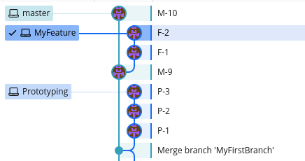
I have two branches, a prototype I don’t want to merge and a feature branch I occasionally want to merge.
The prototype branch has a file I want.
$ git cherry-pick 0806c57ed3e02f3adf2ae634f8c8664e42acb7f2
CONFLICT (modify/delete): LICENSE.md deleted in HEAD and modified in 0806c57 (P-2). Version 0806c57 (P-2) of LICENSE.md left in tree.
error: could not apply 0806c57... P-2
hint: After resolving the conflicts, mark them with
hint: "git add/rm <pathspec>", then run
hint: "git cherry-pick --continue".
hint: You can instead skip this commit with "git cherry-pick --skip".
hint: To abort and get back to the state before "git cherry-pick",
hint: run "git cherry-pick --abort"
$ git status
On branch MyFeature
You are currently cherry-picking commit 0806c57.
(fix conflicts and run "git cherry-pick --continue")
(use "git cherry-pick --skip" to skip this patch)
(use "git cherry-pick --abort" to cancel the cherry-pick operation)
Unmerged paths:
(use "git add/rm <file>..." as appropriate to mark resolution)
deleted by us: LICENSE.md
$ git cherry-pick --abortI tried to cherry-pick the P-2 commit which is an edit of a file not present in my current branch - I abort
And pick the P-1 commit which adds the file
$ git cherry-pick 9ec817c24440cdc2afbb660e00d1d183e00c3574
[MyFeature 62a467a] P-1
Date: Wed Nov 15 21:36:57 2023 +0100
1 file changed, 3 insertions(+)
create mode 100644 LICENSE.md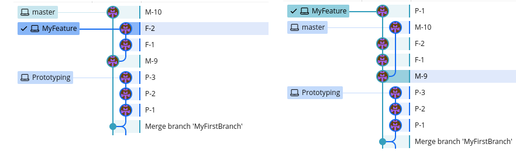
Tags are a way of tracking milestones (fx. a release or deploy)
$ git tag v1.0.0
$ git push --tags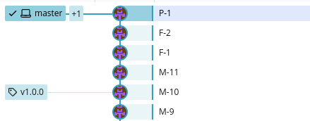
Show what has been added to the repository and by who
$ git logSearch across all branches ignoring case for the word “slides”
$ git log --all -i --grep='slides'$ git log --oneline --decorate v0.0.9..v0.1.0# rebase feature branch ONTO the master branch
$ git rebase master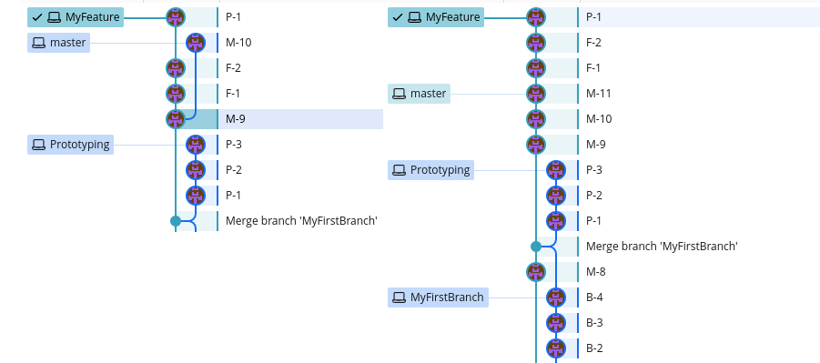
$ git checkout master
$ git rebase MyFeature
Successfully rebased and updated refs/heads/master.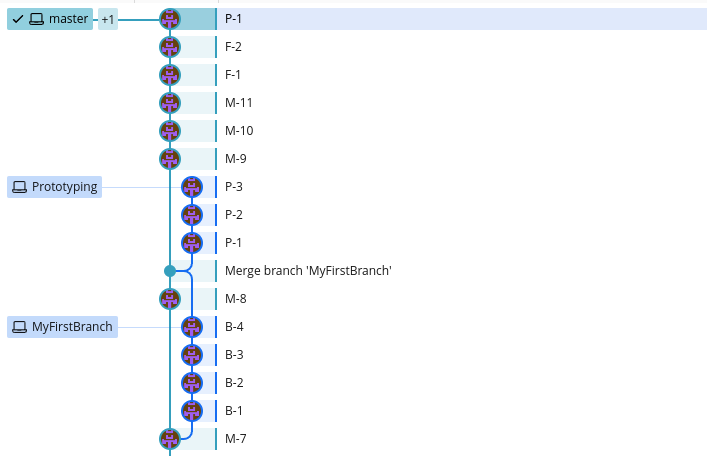
Notice difference between MyFirstBranch and MyFeature
git rebase is a powerful command, and it can be used for many things - fx squashing multiple commits together into one
$ git rebase --interactive HEAD~4
# Opens up in editor
pick d209cad M-11
squash 44987a3 F-1
squash 73f1cf7 F-2
squash cae1cb7 P-1
# Rebase 4a9d085..cae1cb7 onto 4a9d085 (4 commands)
#
# Commands:
# p, pick <commit> = use commit
# r, reword <commit> = use commit, but edit the commit message
# e, edit <commit> = use commit, but stop for amending
# s, squash <commit> = use commit, but meld into previous commit
# f, fixup [-C | -c] <commit> = like "squash" but keep only the previousWarning: Be very careful when rebasing pushed code!
$ git push --forceAtlassian Git rebase tutorial
One of the tenets Linus set for Git was that it had to be safe.
Meaning you have to be able to get back to any state in the repository - a mechanism for tracking state.
$ git reflogNOTE: The reflog is garbage collected, typically after 30-90 days (configurable)
Like many other Version Control Systems, Git has a way to fire off custom scripts when certain important actions occur
.git/hooks/pre-rebase
#!/bin/sh
# Disallow all rebasing
echo "pre-rebase: Rebasing is dangerous. Don't do it."
exit 1$ git archive --output=archive.tar --format=tar masterSpecify files to be excluded in the .gitattributes file
Example:
.gitattributes export-ignore
.gradle export-ignore
.idea export-ignore
.gitignore export-ignore
src/test export-ignoreMake sure to commit the .gitattributes file, or git archive won’t pick up the settings
The gitattributes can do much more…
git-bisect - Use binary search to find the commit that introduced a bug
# HEAD is broken and 893b28d is last known working commit
$ git bisect start HEAD 893b28d --
$ git bisect run ./gradlew checkThis example uses Gradle, but any testsuite or script that returns an ERROR or OK will do
Fx a bash script returning a non-zero value
Git can store binary files just fine, but editing them typically causes the repo to grow the size of the file since it cant diff efficiently.
If many big binary files consider Git Annex or LFS
It often happens that while working on one project, you need to use another project from within it
A way of including other Git projects in your Git repo - but you don’t have a copy of the repo, you have a reference to a commit hash in the other repo.
If the remote repo changes, your version does not until you update
$ git submodule update --init --recursiveSetting are stored in .gitmodules
[submodule "src/main/java/some-other-project"]
path = src/main/java/some-other-project
url = https://github.com/dauer/src/java/some-other-project.git
...The sparse-checkout feature allows users to focus a working directory on a subset of the files at HEAD
If you’re taking work from others on the internet and want to verify that commits are actually from a trusted source